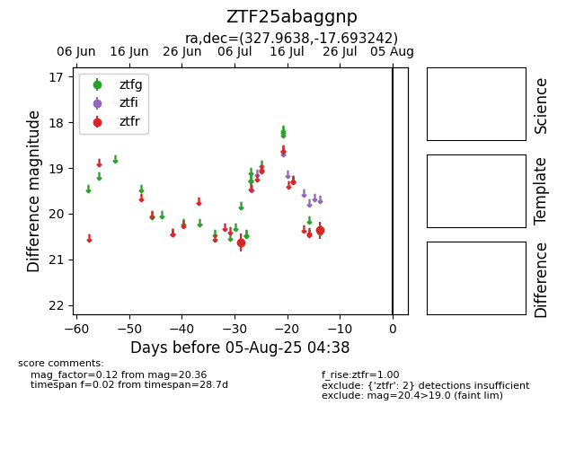

Target ZTF25abaggnp at 2025-08-05 04:38, see:
FINK: fink-portal.org/ZTF25abaggnp
Lasair: lasair-ztf.lsst.ac.uk/objects/ZTF25abaggnp
ALeRCE: alerce.online/object/ZTF25abaggnp
alt names
ZTF25abaggnp (ztf,fink)
coordinates:
equatorial (ra, dec) = (327.9638,-17.69324)
galactic (l, b) = (36.1027,-47.66518)
photometry
last ztfr=20.36
2 ztfr detections
